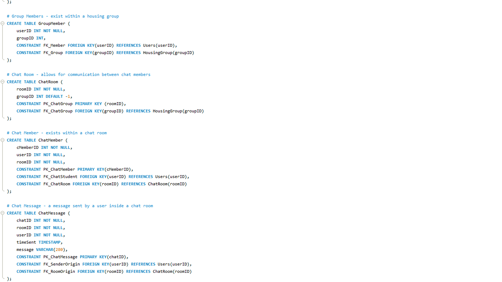

👋 Hello, I'm
A Computer Science Graduate
Scroll Down
Thomas Barber
A Computer Science Graduate
About Me
Experienced
6+ Years of Programming Experience.Flexible
Familiar with 15 programming languages.Reliable
Proven track record of consistenthigh-performance.
Highly motivated and ambitious graduate Computer Science student at the University of Liverpool ready and eager to progress into an industry role in software development to continue learning and developing.
Education
Computer Science with Software Development
University of Liverpool
Sep 2019 - Jun 2022
First-Class Honours
Modules Included
Honours Year Computer Science Project
First-ClassComputer Systems
First-ClassObject-Oriented Programming
First-ClassDatabase Development
First-ClassSoftware Engineering I
First-ClassSoftware Engineering II
First-ClassSoftware Development Tools
First-ClassApp Development
First-ClassPrinciples of Games Design & Implementation
First-ClassAutonomous Mobile Robotics
First-ClassData Structures and Algorithms
First-ClassIntroduction to Artificial Intelligence
First-ClassAdvanced Artificial Intelligence
First-ClassBTEC Level 3 Extended Diploma in Computing
Blackpool & The Fylde College
Sep 2017 - Jun 2019
Triple Distinction Star (D*D*D*)
Modules Included
Computer Systems
DistinctionInformation Systems
DistinctionSoftware Design & Development
DistinctionEvent-driven Programming
DistinctionProcedural Programming
DistinctionDeveloping Computer Games
DistinctionComputer Game Engines
DistinctionHuman Computer Interaction
DistinctionComputer Games Platforms & Technologies
DistinctionControlling Systems using IT
Distinction3D Modelling
DistinctionClient Side Customisation Of Web Pages
DistinctionDigital Graphics for Computer Games
DistinctionRecent Projects
All
C#
Java
Other
Crossing Roads
Recognition of Handwritten Digits

HouseHelpers (Group Project)

Maze Navigation Robot

Creating a RESTful API
JavaScript Calculator
A Practice Project using WPF & XAML
Arduino Thermostat
Procedural Terrain Generation using Perlin Noise
Minecraft Mesh & Terrain Generation
References
Contact Me
If you would like to contact me to discuss opportunities, feel free to do so via either LinkedIn or email. Please also let me know how you found me (i.e., through this website) when doing so.